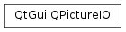

QPictureIO¶
Synopsis¶
Functions¶
- def
description() - def
fileName() - def
format() - def
gamma() - def
ioDevice() - def
parameters() - def
picture() - def
quality() - def
read() - def
setDescription(arg__1) - def
setFileName(arg__1) - def
setFormat(arg__1) - def
setGamma(arg__1) - def
setIODevice(arg__1) - def
setParameters(arg__1) - def
setPicture(arg__1) - def
setQuality(arg__1) - def
setStatus(arg__1) - def
status() - def
write()
Static functions¶
- def
inputFormats() - def
outputFormats() - def
pictureFormat(arg__1) - def
pictureFormat(fileName)
Detailed Description¶
The
PySide2.QtGui.QPictureIOclass contains parameters for loading and saving pictures.
PySide2.QtGui.QPictureIOcontains aPySide2.QtCore.QIODeviceobject that is used for picture data I/O. The programmer can install new picture file formats in addition to those that Qt provides.You don’t normally need to use this class;
QPicture.load(),QPicture.save().
-
class
PySide2.QtGui.QPictureIO¶ -
class
PySide2.QtGui.QPictureIO(ioDevice, format) -
class
PySide2.QtGui.QPictureIO(fileName, format) Parameters: - format – str
- ioDevice –
PySide2.QtCore.QIODevice - fileName – unicode
Constructs a
PySide2.QtGui.QPictureIOobject with all parameters set to zero.Constructs a
PySide2.QtGui.QPictureIOobject with the I/O deviceioDeviceand aformattag.Constructs a
PySide2.QtGui.QPictureIOobject with the file namefileNameand aformattag.
-
PySide2.QtGui.QPictureIO.description()¶ Return type: unicode Returns the picture description string.
-
PySide2.QtGui.QPictureIO.fileName()¶ Return type: unicode Returns the file name currently set.
-
PySide2.QtGui.QPictureIO.format()¶ Return type: str Returns the picture format string or 0 if no format has been explicitly set.
See also
-
PySide2.QtGui.QPictureIO.gamma()¶ Return type: PySide2.QtCore.floatReturns the gamma value at which the picture will be viewed.
See also
-
static
PySide2.QtGui.QPictureIO.inputFormats()¶ Return type: Returns a sorted list of picture formats that are supported for picture input.
-
PySide2.QtGui.QPictureIO.ioDevice()¶ Return type: PySide2.QtCore.QIODeviceReturns the IO device currently set.
-
static
PySide2.QtGui.QPictureIO.outputFormats()¶ Return type: Returns a sorted list of picture formats that are supported for picture output.
-
PySide2.QtGui.QPictureIO.parameters()¶ Return type: str Returns the picture’s parameters string.
-
PySide2.QtGui.QPictureIO.picture()¶ Return type: PySide2.QtGui.QPictureReturns the picture currently set.
-
static
PySide2.QtGui.QPictureIO.pictureFormat(fileName)¶ Parameters: fileName – unicode Return type: PySide2.QtCore.QByteArrayReturns a string that specifies the picture format of the file
fileName, or null if the file cannot be read or if the format is not recognized.
-
static
PySide2.QtGui.QPictureIO.pictureFormat(arg__1) Parameters: arg__1 – PySide2.QtCore.QIODeviceReturn type: PySide2.QtCore.QByteArrayThis is an overloaded function.
Returns a string that specifies the picture format of the picture read from IO device
d, or 0 if the device cannot be read or if the format is not recognized.Make sure that
dis at the right position in the device (for example, at the beginning of the file).See also
QIODevice.pos()
-
PySide2.QtGui.QPictureIO.quality()¶ Return type: PySide2.QtCore.intReturns the quality of the written picture, related to the compression ratio.
-
PySide2.QtGui.QPictureIO.read()¶ Return type: PySide2.QtCore.boolReads an picture into memory and returns
trueif the picture was successfully read; otherwise returnsfalse.Before reading an picture you must set an IO device or a file name. If both an IO device and a file name have been set, the IO device will be used.
Setting the picture file format string is optional.
Note that this function does not set the
PySide2.QtGui.QPictureIO.format()used to read the picture. If you need that information, use thePySide2.QtGui.QPictureIO.pictureFormat()static functions.Example:
iio = QPictureIO() pixmap = QPixmap() iio.setFileName("vegeburger.pic") if iio.read(): # OK picture = iio.picture() painter = QPainter(pixmap) painter.drawPicture(0, 0, picture)
-
PySide2.QtGui.QPictureIO.setDescription(arg__1)¶ Parameters: arg__1 – unicode Sets the picture description string for picture handlers that support picture descriptions to
description.Currently, no picture format supported by Qt uses the description string.
-
PySide2.QtGui.QPictureIO.setFileName(arg__1)¶ Parameters: arg__1 – unicode Sets the name of the file to read or write an picture from to
fileName.
-
PySide2.QtGui.QPictureIO.setFormat(arg__1)¶ Parameters: arg__1 – str Sets the picture format to
formatfor the picture to be read or written.It is necessary to specify a format before writing an picture, but it is not necessary to specify a format before reading an picture.
If no format has been set, Qt guesses the picture format before reading it. If a format is set the picture will only be read if it has that format.
-
PySide2.QtGui.QPictureIO.setGamma(arg__1)¶ Parameters: arg__1 – PySide2.QtCore.floatSets the gamma value at which the picture will be viewed to
gamma. If the picture format stores a gamma value for which the picture is intended to be used, then this setting will be used to modify the picture. Setting to 0.0 will disable gamma correction (i.e. any specification in the file will be ignored).The default value is 0.0.
See also
-
PySide2.QtGui.QPictureIO.setIODevice(arg__1)¶ Parameters: arg__1 – PySide2.QtCore.QIODeviceSets the IO device to be used for reading or writing an picture.
Setting the IO device allows pictures to be read/written to any block-oriented
PySide2.QtCore.QIODevice.If
ioDeviceis not null, this IO device will override file name settings.
-
PySide2.QtGui.QPictureIO.setParameters(arg__1)¶ Parameters: arg__1 – str Sets the picture’s parameter string to
parameters. This is for picture handlers that require special parameters.Although the current picture formats supported by Qt ignore the parameters string, it may be used in future extensions or by contributions (for example, JPEG).
-
PySide2.QtGui.QPictureIO.setPicture(arg__1)¶ Parameters: arg__1 – PySide2.QtGui.QPictureSets the picture to
picture.See also
-
PySide2.QtGui.QPictureIO.setQuality(arg__1)¶ Parameters: arg__1 – PySide2.QtCore.intSets the quality of the written picture to
q, related to the compression ratio.qmust be in the range -1..100. Specify 0 to obtain small compressed files, 100 for large uncompressed files. (-1 signifies the default compression.)
-
PySide2.QtGui.QPictureIO.setStatus(arg__1)¶ Parameters: arg__1 – PySide2.QtCore.intSets the picture IO status to
status. A non-zero value indicates an error, whereas 0 means that the IO operation was successful.See also
-
PySide2.QtGui.QPictureIO.status()¶ Return type: PySide2.QtCore.intReturns the picture’s IO status. A non-zero value indicates an error, whereas 0 means that the IO operation was successful.
See also
-
PySide2.QtGui.QPictureIO.write()¶ Return type: PySide2.QtCore.boolWrites an picture to an IO device and returns
trueif the picture was successfully written; otherwise returnsfalse.Before writing an picture you must set an IO device or a file name. If both an IO device and a file name have been set, the IO device will be used.
The picture will be written using the specified picture format.
Example:
iio = QPictureIO() picture = QPicture() painter = QPainter(picture) painter.drawPixmap(0, 0, pixmap) iio.setPicture(picture) iio.setFileName("vegeburger.pic") iio.setFormat("PIC") if iio.write(): return True # returned true if written successfully
© 2018 The Qt Company Ltd. Documentation contributions included herein are the copyrights of their respective owners. The documentation provided herein is licensed under the terms of the GNU Free Documentation License version 1.3 as published by the Free Software Foundation. Qt and respective logos are trademarks of The Qt Company Ltd. in Finland and/or other countries worldwide. All other trademarks are property of their respective owners.